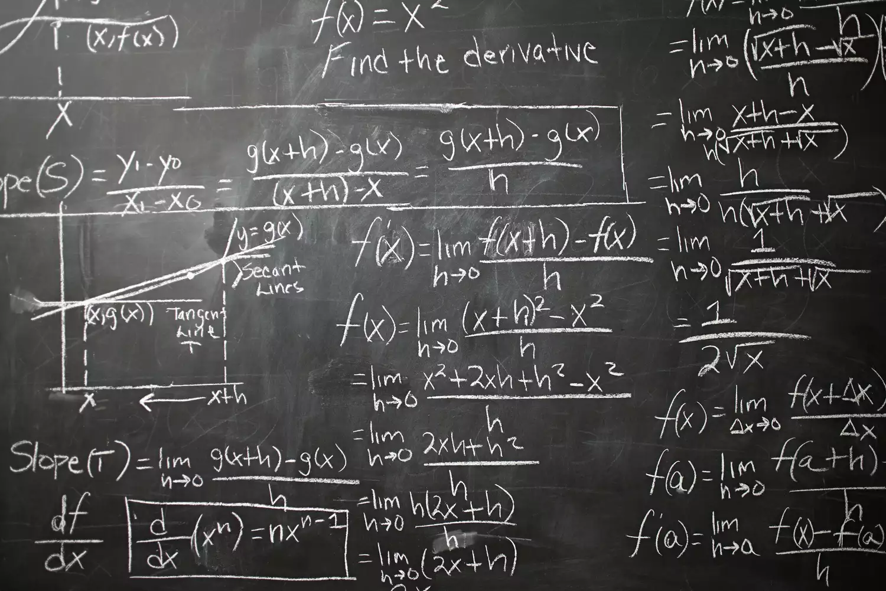

What Is Calculus? Definition and Practical Applications
The branch of mathematics studies rates of change

Calculus is a branch of mathematics that involves the study of rates of change. Before calculus was invented, all math was static; it could only help calculate objects that were perfectly still. But the universe is constantly moving and changing. No objects—from the stars in space to subatomic particles or cells in the body—are always at rest. Indeed, just about everything in the universe is constantly moving. Calculus helps to determine how particles, stars, and matter actually move and change in real time.
Calculus is used in a multitude of fields that you may not think would make use of its concepts. Among them are physics, engineering, economics, statistics, and medicine. Calculus is also used in such disparate areas as space travel, as well as determining how medications interact with the body, and even how to build safer structures. You'll understand why calculus is useful in so many areas if you know a bit about its history as well as what it is designed to do and measure.
Key Takeaways: Fundamental Theorem of the Calculus
Calculus is the study of rates of change.
Gottfried Leibniz and Isaac Newton, 17th-century mathematicians, both invented calculus independently. Newton invented it first, but Leibniz created the notations that mathematicians use today.
There are two types of calculus: Differential calculus determines the rate of change of a quantity, while integral calculus finds the quantity where the rate of change is known.
Who invented calculus?
Calculus was developed in the latter half of the 17th century by two mathematicians, Gottfried Leibniz and Isaac Newton. Newton first developed calculus and applied it directly to the understanding of physical systems. Independently, Leibniz developed the notations used in calculus. Put simply, while basic math uses operations such as plus, minus, times, and division (+, -, x, and ÷), calculus uses operations that employ functions and integrals to calculate rates of change.
Those tools allowed Newton, Leibniz, and other mathematicians who followed to calculate things like the exact slope of a curve at any point. The Story of Mathematics explains the importance of Newton's fundamental theorem of the calculus:
"Unlike the static geometry of the Greeks, calculus allowed mathematicians and engineers to make sense of the motion and dynamic change in the changing world around us, such as the orbits of planets, the motion of fluids, etc."
Using calculus, scientists, astronomers, physicists, mathematicians, and chemists could now chart the orbit of the planets and stars, as well as the path of electrons and protons at the atomic level.
Differential vs Integral Calculus
There are two branches of calculus: differential and integral calculus. "Differential calculus studies the derivative and integral calculus studies...the integral," notes the Massachusetts Institute of Technology. But there is more to it than that. Differential calculus determines the rate of change of a quantity. It examines the rates of change of slopes and curves.
This branch is concerned with the study of the rate of change of functions with respect to their variables, especially through the use of derivatives and differentials. The derivative is the slope of a line on a graph. You find the slope of a line by calculating the rise over the run.
Integral calculus, by contrast, seeks to find the quantity where the rate of change is known. This branch focuses on such concepts as slopes of tangent lines and velocities. While differential calculus focuses on the curve itself, integral calculus concerns itself with the space or area under the curve. Integral calculus is used to figure the total size or value, such as lengths, areas, and volumes.
Calculus played an integral role in the development of navigation in the 17th and 18th centuries because it allowed sailors to use the position of the moon to accurately determine the local time. To chart their position at sea, navigators needed to be able to measure both time and angles with accuracy. Before the development of calculus, ship navigators and captains could do neither.
Calculus—both derivative and integral—helped to improve the understanding of this important concept in terms of the curve of the Earth, the distance ships had to travel around a curve to get to a specific location, and even the alignment of the Earth, seas, and ships relative to the stars.
Practical Application of Calculus
Calculus has many practical applications in real life. Some of the concepts that use calculus include motion, electricity, heat, light, harmonics, acoustics, and astronomy. Calculus is used in geography, computer vision (such as for autonomous driving of cars), photography, artificial intelligence, robotics, video games, and even movies. Calculus is also used to calculate the rates of radioactive decay in chemistry, and even to predict birth and death rates, as well as in the study of gravity and planetary motion, fluid flow, ship design, geometric curves, and bridge engineering.
In physics, for example, calculus is used to help define, explain, and calculate motion, electricity, heat, light, harmonics, acoustics, astronomy, and dynamics. Einstein's theory of relativity relies on calculus, a field of mathematics that also helps economists predict how much profit a company or industry can make. And in shipbuilding, calculus has been used for many years to determine both the curve of the hull of the ship (using differential calculus), as well as the area under the hull (using integral calculus), and even in the general design of ships.
In addition, calculus is used to check answers for different mathematical disciplines such as statistics, analytical geometry, and algebra.
Calculus in Economics
Economists use calculus to predict supply, demand, and maximum potential profits. Supply and demand are, after all, essentially charted on a curve—and an ever-changing curve at that.
Economists use calculus to determine the price elasticity of demand. They refer to the ever-changing supply-and-demand curve as "elastic," and the actions of the curve as "elasticity." To calculate an exact measure of elasticity at a particular point on a supply or demand curve, you need to think about infinitesimally small changes in price and, as a result, incorporate mathematical derivatives into your elasticity formulas. Calculus allows you to determine specific points on that ever-changing supply-and-demand curve.
#############################################################################################